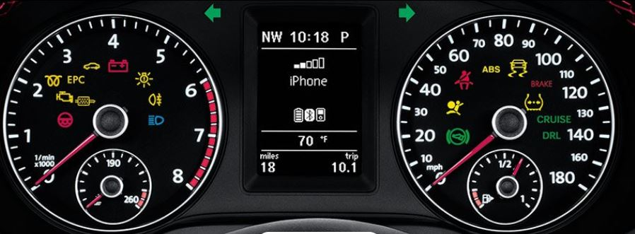
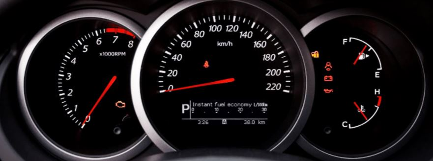
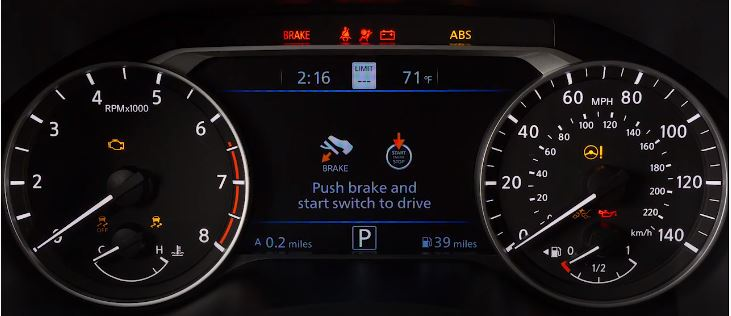
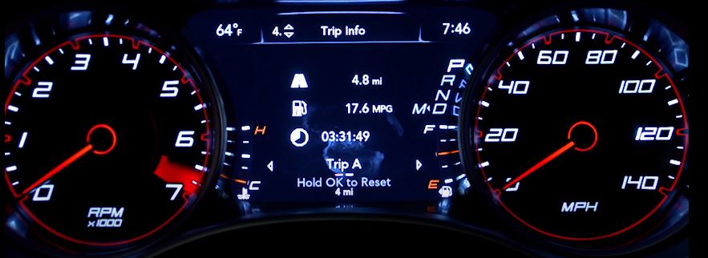
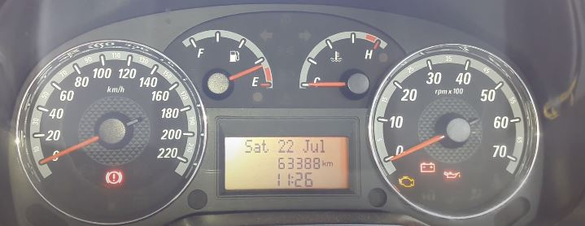

Car Dashboard
Answer for C
Examples of car dashboard with images, pros and cons:
Example 1:

Pros:
- All major functionalities like speedometer, tachometer, fuel indicator and warning symbols are included
- Shows time and temperature
Cons:
- The speedometer and tachometer units are added in between the numbers, making it diffult to identify.
- Speedo meter and tacho meter are clumsy with icons and fuel indicator.
Example 2:

Pros:
- Speedometer is kept at the center and it is bigger.
- Units are added for speedometer and tachometer
Cons:
- Not having important icons like head light, engine temperature. Though the icons may apper when used / an
when there is an issue. Still it causes below issue.
- Icons are spread across 3 areas (in speedometer, tachometer and fuel and other area) user has to get familar
with which icons will be displayed where
Example 3:

Pros:
- Units are added for speedometer and tachometer
- utilized LCD display to show important instructions
Cons:
- Speedometer is too much crowded making it difficult to identify speedometer units and the warnings.
- There are two units (MPH at top and km/h at right bottom )showing in the speedometer, difficult to know
which is correct.
- Fuel icon is showing arrow towards left though the actual meter is at the below or right of it.
Example 4:

Pros:
- Utilized LCD display to show messages and warnings
- Shows temerature and time.
Cons:
- Difficult to identify fuel Indicator
- In Speedometer and Tachometer, different lines are used for main number range marks.
For Example: white line is used for marking in between main numbers
(between 1 and 2 in tachometer and 20 and 40 in speedometer)
but the inward curve is used for main range units (1, 20 in tachometer and 20,40 in speedometer.)
Example 5:

Pros:
- cleary seperated meters for speedometer, tachometer and feul indicator.
- Shows date, time and total distanced travlled.
Cons:
- Speedometer is on the left side rather than to right or in the center by convention. It confuses the user
- Date and time can be grouped together or can be shown one after another immediatley
Answer for B
Most common features of car dashboard:
- Speedometer - To check the current speed of the vehicle and maxicum speed the vehicle can go.
- Feul Indicator - Shows the current fuel level.
- Odometer - Shows the total distance travlled by the car.
- Cruise Controk - To lock the accelerator on a specific speed and take his or her foot off of the pedal,
usually when there are no stops.
- Indicator lights - shows the singal for other vehicle, weather the this vehicles planning to move lfet or
right.
- Warning lights - many warning lights such as seat belt, door opened, battery etc.
Rare uses of car dashboard:
- Tachometer - Shows the revolutions per minute of the enginer shaft.
- More then one units in speedometer - some cars has both km/h and m/s. Both may not be required
- Engine and outside Temperature
- Tire pressure
Contols that user interacts with cardashboards:
- Accelerator
- Break, hand break
- Signal Indicator - turn on or off left or right singal.
- Head light, tail light and Parking light
- Horn
- Door open or close
- Cruise Control
Common mistakes user can make with current design:
- Some car dashboards donot have an indicator to show if any of the car door is opened.
- If the user is not aware of certian warning symbols, the use may not correct the issue.
Answer for A
Improvements to make on the control interface
- Instead of grouping the fuel indicator meters with in a speedometer, seperate it.
- Keep the speedometer to the left.
- Keep the warning symbols in seperate section.
- Keep the indicator lights on the center of the screen.
New design with Improvements: